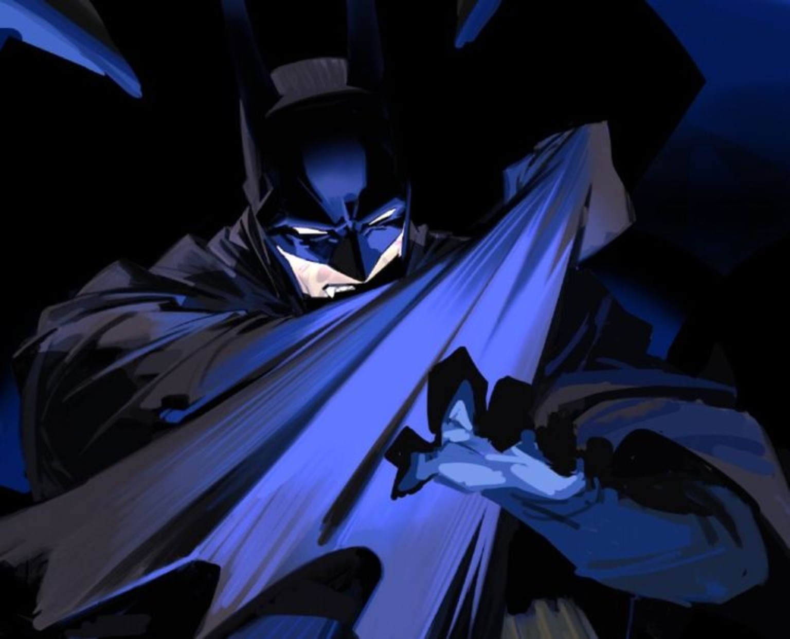

CLICK ANYWHERE TO ENTER
silent_k77
gamer · creator · developer
WELCOME TO MY PROFILE
✦
About me
Gaming, edits, and projects.
▶
YouTube
Add your channel link here
View channel
FIND ME ELSEWHERE
D
♪
◎
▶